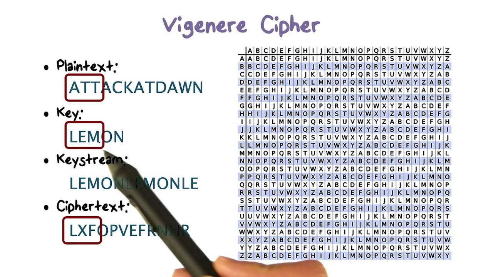

Typer af inkryption
Cæsarkryptering

Cæsarkryptering er en simpel form for kryptering, hvor hvert bogstav i en besked bliver skiftet med et andet bogstav, der ligger et fast antal pladser længere fremme i alfabetet. Den mest kendte version er den, hvor hver bogstav skiftes tre pladser frem (en såkaldt Caesar cipher). For eksempel, 'A' erstattes med 'D', 'B' med 'E', osv.
Hashing

Hashing er en kryptografisk proces, hvor data konverteres til en fast størrelse værdi kaldet en hash-værdi. Det bruges ofte til at gemme adgangskoder sikkert i databaser ved at omdanne dem til hash-værdier, hvilket gør det vanskeligt for hackere at få adgang til de faktiske adgangskoder. Hashing er envejs, hvilket betyder, at det er næsten umuligt at gendanne den originale data fra hash-værdien alene.
2-faktor-validering
To-faktor-autentificering er en sikkerhedsforanstaltning, der kræver to forskellige former for identifikation fra brugeren, normalt noget de kender (f.eks. adgangskode) og noget de har (f.eks. en engangskode genereret af en app eller sendt via SMS). Dette øger sikkerheden ved at kræve, at en potentiel angriber skal have både brugerens adgangskode og adgang til deres telefon eller en anden godkendt enhed for at få adgang til kontoen. To-faktor-autentificering beskytter mod uautoriseret adgang selvom en angriber skulle få fat i brugerens adgangskode.
Vigenere kryptering
Vigenère-kryptering er en form for polyalfabetisk substitutionskryptering, hvor hver bogstav i en besked bliver skiftet baseret på et nøgleord eller en nøglesætning. Nøgleordet bestemmer, hvilket alfabet der skal bruges til at skifte bogstaverne i beskeden. Dette gør Vigenère-kryptering mere robust end en simpel substitutionskryptering som Cæsar-kryptering, fordi det gør det sværere at analysere mønstre i beskeden.